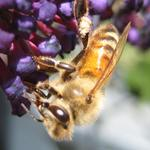

Song Seeds - Automatically generate notes within a scale and play them.
Evolve additional tracks which will compliment the initial seed when played together.
Cellular Automaton - Cellular Automaton
made with javascript, canvas, and jquery. Initial setting is "Conway's Game of Life" rules,
but you can adjust the rules.
Scale Comparison Tool - View side by side Google Maps
windows which always stay in scale with each other.
Car Thing - Drive around.
Gallery
My Wedding!